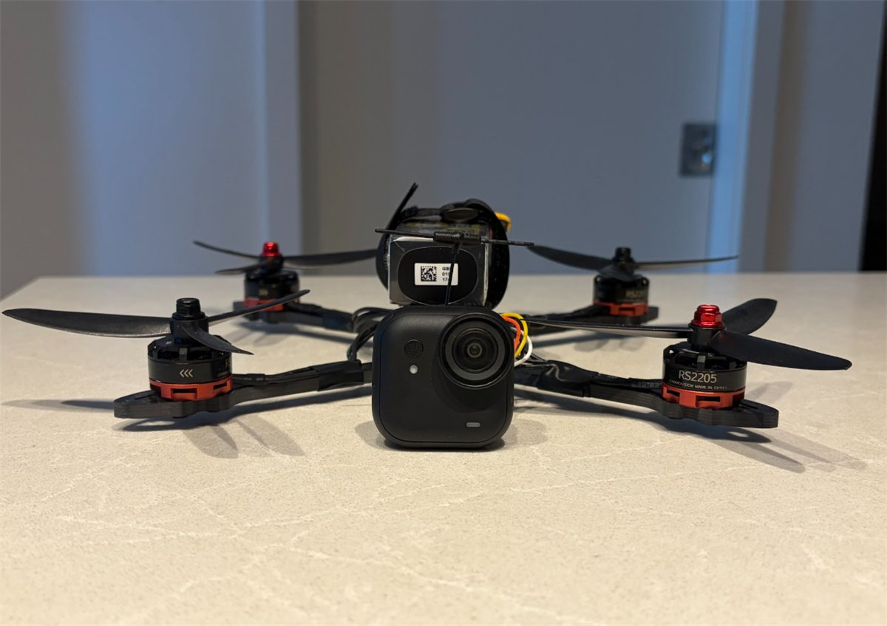
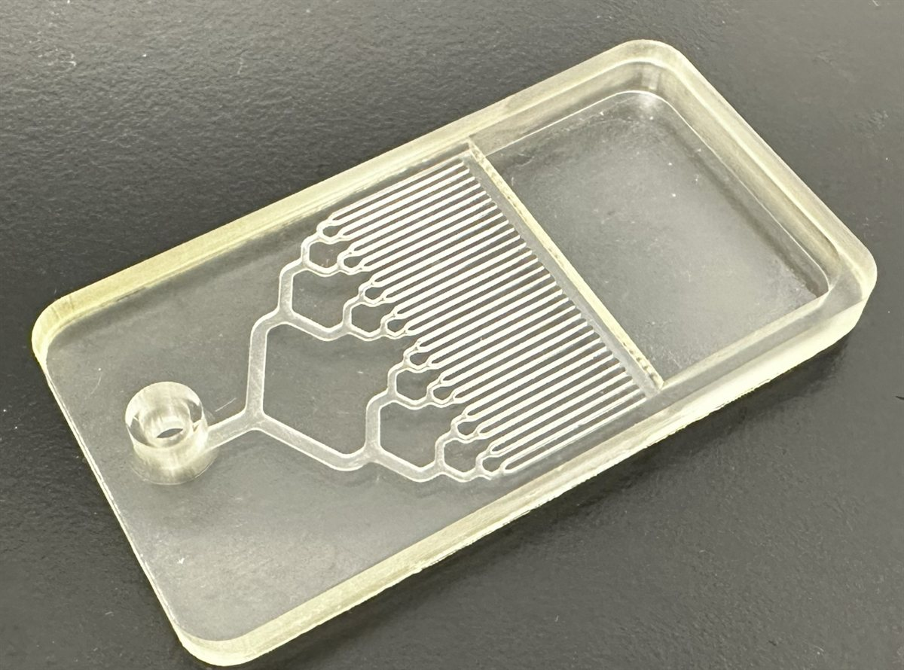
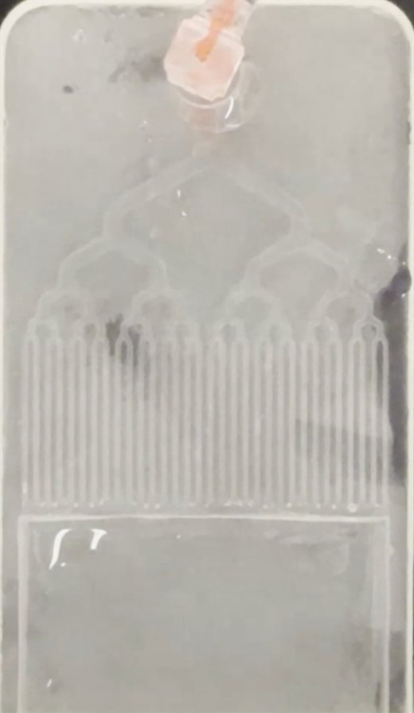
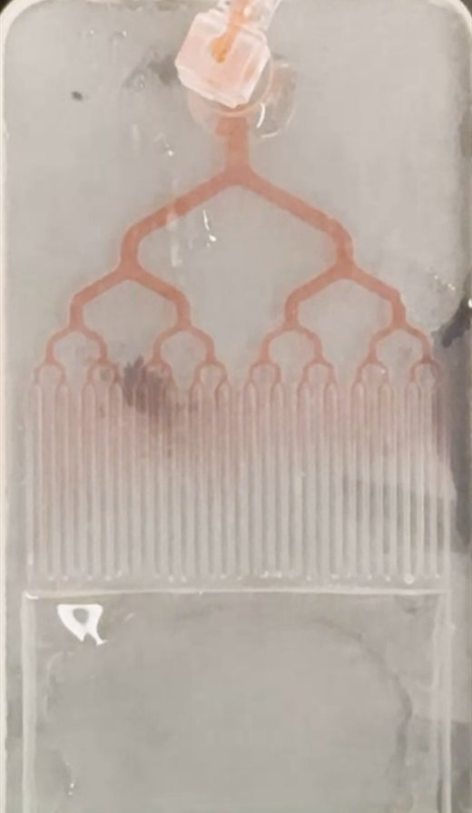

A few things I've built

Deep Learning for Robotic Grasping
A simulated Franka Panda arm that finds objects in a cluttered room, works out how to grab them and plans a collision-free path to do it. Next up: clothes, and eventually making a bed.
More →
Custom FPV Drone
Designed and wired a FPV done, then tuned the PID loops from gyro logs until roll and pitch oscillation dropped by 30% and settling time by 25%. It now flies steadily carrying 500 g.
More →
QEII Hospital Expansion
Sixteen months on the mechanical design of Atlantic Canada's largest hospital project. I ran load calculations for over 5,000 spaces and psychrometric analyses for the critical rooms, and helped make the air handling and central plant 20% more efficient.
More →
3D-printed PDMS
PDMS




Microfluidic Printhead for Collagen Extrusion
I redesigned the channels of a microfluidic printhead that extrudes aligned collagen sheets, which raised yield by 50%. I also moved its fabrication to 3D printing, 70% more efficient to make, and trained a small model that predicts the flow split with 93% accuracy.
More →